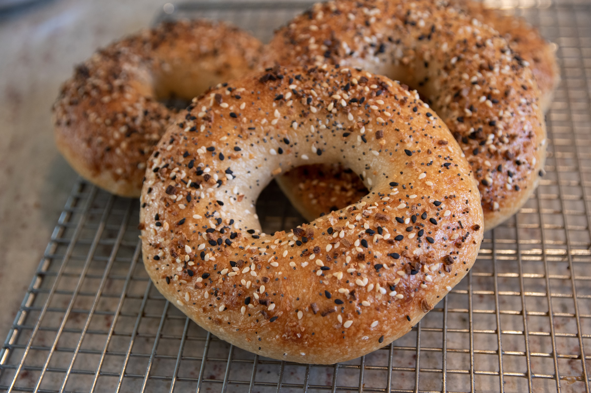
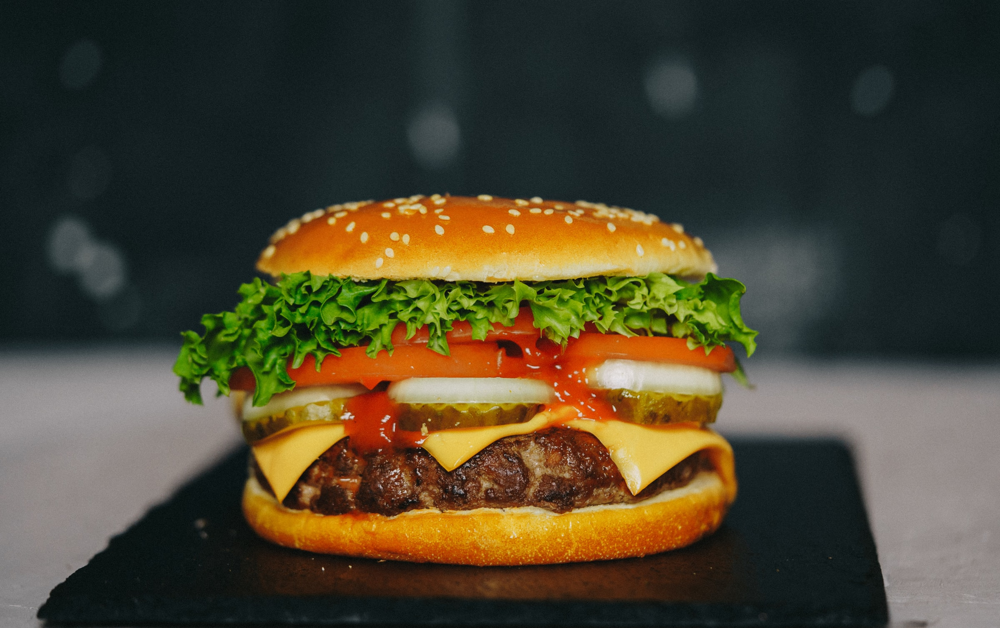
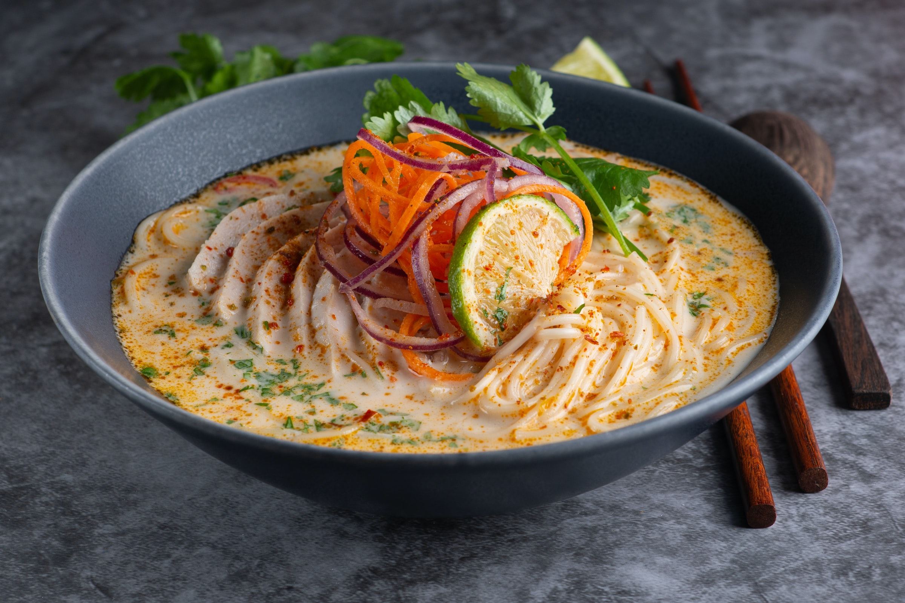
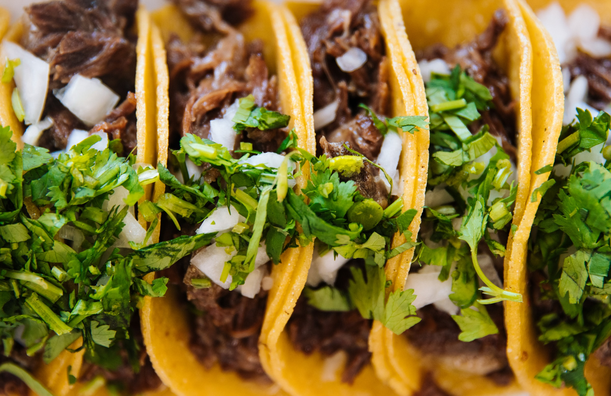
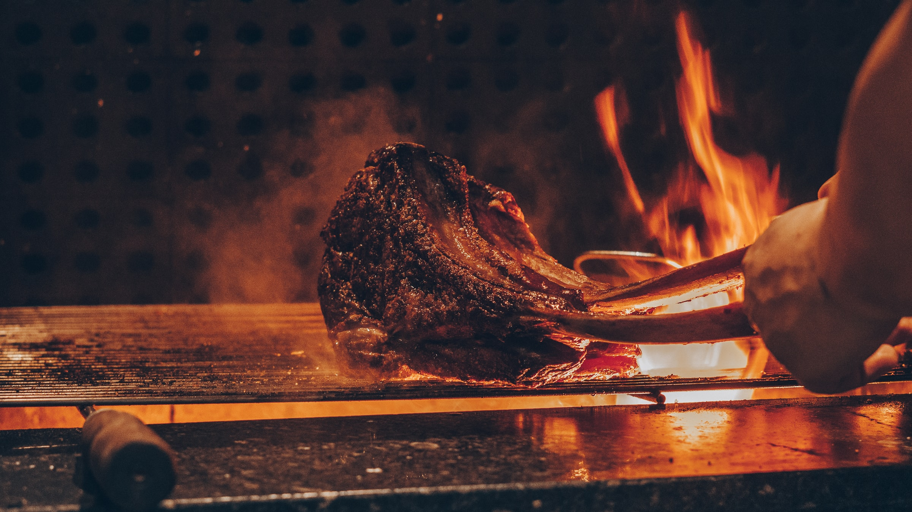
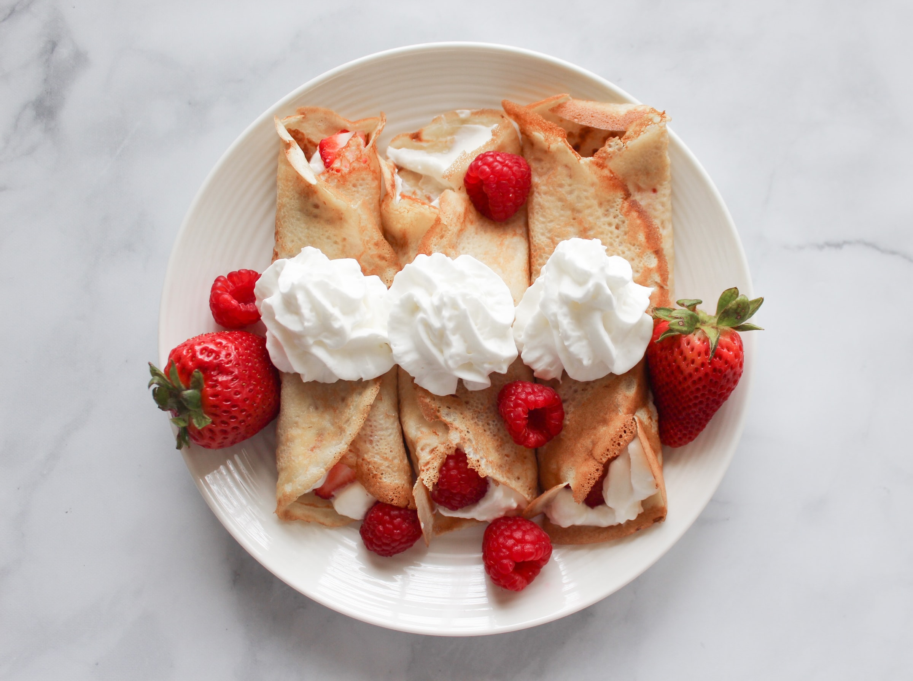

Stuff to eat in The Big Apple?!
When there are so many places, you wanna know where you are most likely to get foodgasm. Here are some famous places, based on what you wish to eat.
On this Page
PIZZA.

NYC is home to some of the best pizza in the country.
Lucali
Lucili Pizza is Miami's beloved Brooklyn brick-oven pizza made with fresh ingredients. And it isn’t cheap!
Juliana's Pizza
Pizzas come freshly baked from the stone oven and are incredibly delicious. With red awnings, rustic furnishings, and white and red checked fabric napkins, the Italian atmosphere is obvious.
Grimaldi's Pizzeria
As for Grimaldi's Pizzeria, it is the name of an Italian pizza chain founded in New York in 1941. The pizzas are baked in coal-fired ovens in the old Italian tradition and are considered to be New York's best.
Motorino Pizza
Pizzas at this East Village place are excellent artisanal, Neapolitan-style with just the right amount of char.
Roberta’s Pizza
Roberta’s is located in Bushwick right off the L train. Do yourself a favor and try out either their “Famous Original” or “Cowabunda Dude” pizza.
BAGELS.
Ess-a-Bagel
Originally established in 1976, Ess-a-Bagel serves up soft and delicious bagels. The chain now has multiple locations across Manhattan so if you haven't tried it, you should go!
Brooklyn Bagel
The glutenous chew that every New Yorker is looking for in their bagel is guaranteed at this shop. You truly cannot go wrong with a schmear or one of their signature sandwiches.
Absolute Bagels
They make some really iconic Bagels in NYC, Featuring homemade bagels and endless cream cheese options, this place in the UWS is definitely worth a visit.
BURGERS & SANDWICHES.
Burger Joint
two locations and a cult-like following. These classic no-frills burgers will definitely hit the spot.
Minetta Tavern
The Black Label Burger is almost $30, but it's worth it. It's made with brisket, short rib, skirt steak, and dry-aged ribeye.
Umami Burger
Umami Burger, the first NYC location of the popular California chain, serves up reasonably priced burgers in the city. Try the truffle burger.
Shake Shack
Fast food icon Shake Shack has locations all over New York City. Try the Shack Stack, made with a burger topped with fried mushroom stuffed with cheese. And don't leave without trying their signature Concrete.
Bareburger
Have you ever wanted to try an elk, bison, or even an ostrich burger? This is where you should go. There are a bunch of locations and the chocolate peanut butter shake is delicious.
RAMEN.
Ivan Ramen
A Jewish immigrant from Long Island became one of the world's foremost experts on ramen after his ramen blew up in Japan. Ivan Orkin brought his ramen to NYC in two locations. It's great.
Ippudo Ramen
Ippudo is known for serving perfect bowls of ramen every time. The spicy ramen is a must try here. There are two locations, one in the East Village and one near Times Square.
Chuko Ramen
This Brookln ramen spot is the product of two Morimoto chefs. And it's excellent.
Yuji Ramen
This ramen is from Yuji Ramen, which is another Brooklyn ramen spot. It is infused with bacon, egg, and a lucious, velvety sauce. That makes this ramen very different from traditional ramen.
Momofuku Noodle Bar
This place is great if you are in the East Village. The pork buns here are also worth checking out.
Bassanova Ramen
A ramen restaurant in Chinatown called Bassanova Ramen has a delicious Green Curry Ramen. But the broth is the best part.
TACOS.
Otto’s Tacos
The East Village taqueria offers a variety of tasty mini tacos. Their corn tortillas are made right in front of you, and the fillings are all authentic.
Brooklyn Taco
A great place to get a Chipotle Chicken Taco is inside of Essex Street Market.
Dos Toros
A lot of places offer this taqueria. Enjoy the melted cheese inside the tortilla. Top it with guacamole, and if you want the spiciest sauce, go for it.
Calexico Cart
There are a lot of different dishes on the menu, so go crazy. Starting out as a cart, it's now a permanent restaurant.
Taquitoria
There is a lower east side gem that was created by three Iron Chef Marc Forgione staff members. It's the ultimate comfort food, especially after a few drinks. Even their vegan black bean option is legit.
Suenos
You must try the Shredded Mini Tacos at this Chelsea restaurant. They are amazing.
BARBECUE.
Hometown Bar-B-Que
One of the best BBQ spots in New York. Their beef ribs, especially, are ridiculously good. It's a bit of a hassle to get there, but the trip is worth it. Expect a long line, sometimes more than an hour.
Mighty Quinn’s
There is no denying that this East Village joint, now with locations throughout the city, really knows brisket. The brisket is super moist, juicy, and tender, and comes with your choice of pickled vegetables.
Delaney Barbecue
You should check out this place if you're craving brisket in Brooklyn. It's pretty darn good and might even make you cry.
Blue Smoke
This is a classic in the NYC barbecue scene. If you go at the right time of year, blueberry crisp might be on the menu. If it is, you shouldn't miss it.
DESSERTS.
LeVain Bakery
The best cookie in the city can be found here. They're massive and will cost you $4 each, but they're worth it. Try the chocolate peanut butter or the double chocolate chip.
Molly’s
There are also plenty of swings lining the counter, or you can grab a board game and sit at a table to relax while you enjoy your cupcake. The cupcakes are also very good.
Two Little Red Hens
This little bakery has great red velvet and Brooklyn blackout cupcakes if you are in the Upper East Side.
Beard Papa
On New York's Upper West Side, this Japanese company knows cream puffs. Succulent vanilla custard fills the puffs, which are light, airy, and crisp.
Jacques Torres Chocolate
Chocolate lovers should check out Jacques Torres. He has several outposts around the city and you can satisfy any chocolate craving there. He serves giant ice cream sandwiches as well.
La Maison du Chocolat
Stunning pieces of chocolate adorn this Upper East Side chocolate boutique. This is a great place to splurge on a bit of chocolate and buy gifts for your friends and family.
FINE DINING.

Here in NYC, you have access to some of the best chefs in the world. Michelin Stars, James Beard awards, famous TV chefs, culinary pioneers....Do yourself a favor and enjoy.
Blue Hill
It is a treat to dine at the Michelin-starred restaurant of chef Dan Barber, who was one of the pioneers of the farm-to-table movement.
Barbuto
Chef Jonathan Waxman is one of the best roast chicken chefs in New York. In his restaurant in the Meatpacking District, he serves up some of the best pasta you'll ever have.
Gramercy Tavern
You'll never be disappointed with a meal at this Michelin-starred restaurant in NYC. If you go for lunch, I've heard they have an off-the-menu burger that's amazing. The tasting menu is wonderful, too.
Eleven Madison Park
One of a very few New York City restaurants to have three Michelin stars, Eleven Madison Park offers a tasting-only menu perfect for celebrating. Set across the street from Madison Park, the dining room is absolutely exquisite.